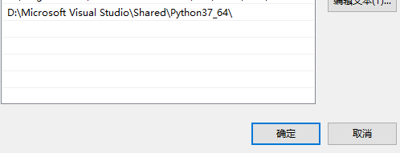

管理员启动CMD
1、直接pip install pymouse，成功安装，
2、安装PyHook: https://www.lfd.uci.edu/~gohlke/pythonlibs/
(向下滑动找到PyHook，里面有很多包，具体型号要下哪个包安装才能正确，把这些包都下载一个个去安装试试，当然比较笨就是了)
本地安装PyHook：管理员启动CMD输入:pip install +安装包路径
3、安装PyUserinput，pip install PyUserinput
------可以使用pymouse-----
小插曲：
'python -m pip install --upgrade pip'，显示“'python' 不是内部或外部命令，也不是可运行的程序
检查了一下环境变量发现里面没有
环境变量 -- 系统变量--path双击里面添加PythonIDE路径
例如：

当然也可以CD进入Python目录
方案查找自:
https://blog.csdn.net/weixin_41561539/article/details/94294828
https://blog.csdn.net/weixin_38917807/article/details/81667041
https://www.cnblogs.com/to-red/p/9916668.html